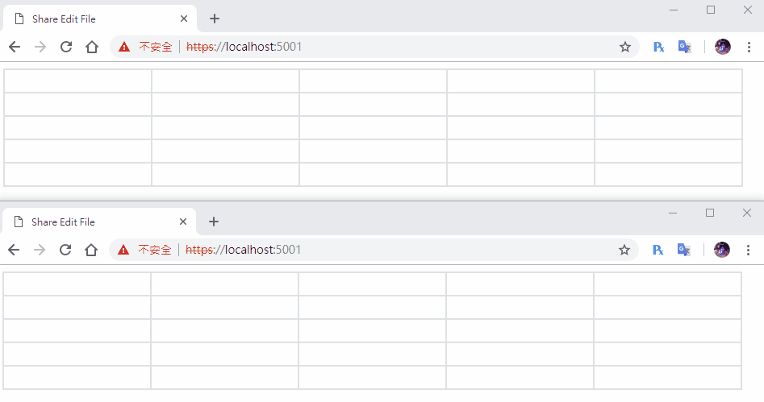

[鐵人賽Day22] 實作Web即時共同編輯文件 (2) - 使用signalR同步文件內容
文章目錄
沒想到昨天光完成前端的部分就花那麼多時間，看來這次實作比上次難了不少，大概是因為沒使用套件的關係吧！ＸＤ
那麼今天就來做signalR同步的部分吧。
資料Binding
我們要來想想再修改資料成功後，要怎麼回應給Server，回應格式要怎麼訂，先來訂一下後端的資料格式吧！
建立容器
先創一個CellModel.cs，大致內容如下
using System;
namespace EditFileWeb.Models
{
public class CellModel
{
// cell名稱
public string cellName{get;set;}
// Cell內容
public string text { get; set; }
// 編輯者
public string editor { get; set; }
// 有無上鎖
public bool lockState { get; set; }
}
}
再創一個UserModel用來裝使用者的資訊，這邊最重要的部份是要儲存使用者的代表顏色color，id為signalR產生的connectionid，name則是需要資料庫時讀取，不過我們這邊沒用，是我先預留的。
using System;
using System.Collections.Generic;
namespace EditFileWeb.Models
{
public class UserModel
{
// id
public string id { get; set; }
// 名稱
public string name { get; set; }
// 代表色
public string color { get; set; }
}
}
最後再創一個FileModel.cs，使用泛型Dictionary<T,T>來裝上面的上面的CellMode，再一個泛型List<T>來裝目前編輯的使用者
using System;
using System.Collections.Generic;
namespace EditFileWeb.Models
{
public class FileModel
{
// 文件名稱
public string filename { get; set; }
// 行
public int row { get; set; }
// 列
public int column { get; set; }
// 文件內容
public List<CellModel> textList { get; set; }
// 使用中的文件用戶
public List<UserModel> editor { get; set; }
// 建立者
public string creator { get; set; }
}
}
建立FileServie
再來建立FileServie.cs用來儲存我們的文件資料，基本上就是新增和取得和新增file，在一個CreateTestFile來建立測試用的方法，比較特別的是EditFileCell修改cell的方法，這次我們用比較聰明的LINQ來達成，上一個實作寫太趕了，一直忘記List和Dictionary都有實作IEnumerator，所以能用LINQ來做查詢修改。
using System;
using System.Collections.Generic;
using EditFileWeb.Models;
using System.Linq;
namespace EditFileWeb.Services
{
public class FileService
{
private List<FileModel> list;
public FileService()
{
list = new List<FileModel>();
CreateTestFile();
}
// 取得文件
public FileModel GetFile(string fileName)
{
var file = (from f in list where f.filename == fileName select f).FirstOrDefault();
return file;
}
// 新增文件
public bool AddFile(FileModel file)
{
list.Add(file);
return true;
}
// 編輯文件
public CellModel EditFileCell(string fileName, string cellName, string text)
{
// 找出哪個file
var file = (from f in list where f.filename == fileName select f).FirstOrDefault();
// 找出哪個cell
var cell = (from c in file.textList where c.cellName == cellName select c).FirstOrDefault();
cell.text = text;
return cell;
}
// 建立測試File
public void CreateTestFile()
{
var fileModel = new FileModel();
fileModel.creator = "Test";
fileModel.filename = "TestFile";
fileModel.row = 5;
fileModel.column = 5;
fileModel.editor = new List<UserModel>();
List<CellModel> textList = new List<CellModel>();
for (int i = 0; i < 5; i++)
{
for (int j = 0; j < 5; j++)
{
var cellModel = new CellModel();
cellModel.lockState = true;
cellModel.text = "";
cellModel.cellName = $"{i}{j}";
textList.Add(cellModel);
}
}
fileModel.textList = textList;
list.Add(fileModel);
}
}
}
建立FileHub
再來建立FileHub.cs，一樣建構子接收FileServie，今天先做2個方法就好GetFile()和EditText()
using System;
using System.Threading.Tasks;
using Microsoft.AspNetCore.SignalR;
using EditFileWeb.Services;
namespace EditFileWeb.Hubs
{
public class FileHub : Hub
{
private FileService _service;
public FileHub(FileService service)
{
_service = service;
}
public async Task GetFile(string fileName)
{
var file = _service.GetFile(fileName);
await Clients.Caller.SendAsync("ReceiveFile", file);
}
public async Task EditText(string fileName, string cellName, string text)
{
var editText = _service.EditFileCell(fileName, cellName, text);
await Clients.All.SendAsync("ReceiveEditText", cellName, editText.text);
}
// 連線
public override async Task OnConnectedAsync()
{
await base.OnConnectedAsync();
}
// 斷線
public override async Task OnDisconnectedAsync(Exception exception)
{
await base.OnDisconnectedAsync(exception);
}
}
}
Starup.cs先引用Hub和Service
using EditFileWeb.Hubs;
using EditFileWeb.Services;
再註冊FileService和signalR的Router
public void ConfigureServices(IServiceCollection services)
{
services.AddSignalR();
services.AddSingleton<FileService>();
}
public void Configure(IApplicationBuilder app, IHostingEnvironment env)
{
if (env.IsDevelopment())
{
app.UseDeveloperExceptionPage();
}
app.UseDefaultFiles();
app.UseStaticFiles();
app.UseSignalR(routes =>
{
routes.MapHub<FileHub>("/fileHub");
});
}
前端處理
首先安裝前端signalR套件，再來最後的前端的部分，我們先把createTable()這方法刪掉，因為我們現在是要由後端丟回的資訊來決定怎麼畫表格。
取得資料畫出表格
首先我們要修改畫表格的方式，連線成功後馬上取得File的資訊，呼叫GetFile()方法，然後再接收方法內開始畫表格，因為我們file資訊內有設定row和column，所以就輕鬆用2個for迴圈畫出來就行，然後要再迴圈內幫cell建立ID
connection.start()
.then(function () {
connection.invoke('GetFile', 'TestFile').catch(function (err) {
return console.error(err.toString());
});
})
.catch(function (err) {
return console.error(err.toString());
});
connection.on("ReceiveFile", function (file) {
console.log(file);
var count = 0;
for (var i = 0; i < file.row; i++) {
var row = document.createElement('tr');
for (var j = 0; j < file.column; j++) {
var cell = document.createElement('td');
cell.id = file.textList[count].cellName;
cell.addEventListener('click', cellEdit);
cell.appendChild(createCell());
row.appendChild(cell);
count++;
}
table.append(row);
}
});
建立input change的方法
我們要在編輯表格時，邊寫資料邊回傳，所以要監聽所有input的change事件，這邊我們也可以寫在td內，因為input改變時td內的元素也會改變，有興趣可以查查JS冒泡事件，再建立一個接收用的事件，來修改所有人的表格內容。
function change() {
console.log(this);
connection.invoke('EditText', 'TestFile', this.id, this.childNodes[0].value).catch(function (err) {
return console.error(err.toString());
});
}
connection.on("ReceiveFile", function (file) {
console.log(file);
var count = 0;
for (var i = 0; i < file.row; i++) {
var row = document.createElement('tr');
for (var j = 0; j < file.column; j++) {
var cell = document.createElement('td');
cell.id = file.textList[count].cellName;
cell.addEventListener('click', cellEdit);
// cell塞入change事件
cell.addEventListener('input', change);
// 建立cell填入後端紀錄的值
cell.appendChild(createCell(file.textList[count].text));
row.appendChild(cell);
count++;
}
table.append(row);
}
});
connection.on("ReceiveEditText", function (cellName, text) {
document.getElementById(cellName).childNodes[0].value = text;
});
最後再建立cell時填入後端傳回的值，這樣不同時間進來的人就讀到一樣的內容
// 建立Cell
function createCell(text) {
var input = document.createElement('input');
input.addEventListener('blur', cellLock);
input.value = text;
input.type = 'text';
input.readOnly = true;
return input;
}
到這邊就完成啦!!!，明天我們再來寫其他細節的部分。
DEMO
